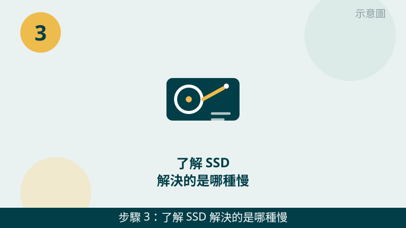

舊電腦開機慢、開程式要等很久，很多人第一個念頭就是「是不是該換一台了」。其實先問對問題：慢的原因是什麼？如果是硬碟或記憶體在拖速度，升級就可能很有感；如果是其他零件已經跟不上，升級的效果就會打折扣。
開始之前先跟您說明一個判斷原則：「什麼時候慢」比「有多慢」更重要。開機和開程式慢，通常跟硬碟有關；開很多東西、切換程式時才卡，通常跟記憶體有關。您先回想平常是哪一種慢，檢查時會更有方向。
規格與使用率先傳給我們看
把工作管理員的效能頁面、電腦規格拍下來傳 LINE，瓶頸是硬碟、記憶體還是其他零件，一看就比較清楚。先免費評估、檢測後報價，確認後再決定要不要升級。
舊電腦升級前自救檢查清單（先判斷再花錢）
- 1. 先打開工作管理員，看平常使用時哪個數字最高。請在平常最常用的狀態下按 Ctrl＋Shift＋Esc 開啟工作管理員，點「效能」頁籤，看 CPU、記憶體、磁碟三個數字。怎麼判斷：磁碟長期接近滿載，硬碟很可能是瓶頸；記憶體長期接近滿載，多工時容易卡；CPU 長期滿載，就要先看是哪個程式在吃，再判斷是不是配備問題。
示意圖（非官方截圖） - 2. 分清楚您的慢是哪一種：開機慢，還是多工才卡。請回想並實際試一次：從開機到能順利開瀏覽器要多久？只開一個程式順不順？一次開很多分頁、文件、通訊軟體時才開始卡嗎？怎麼判斷：開機和開程式慢，優先懷疑硬碟；東西開多了才卡，優先懷疑記憶體；兩種都慢，就要一起看。
示意圖（非官方截圖） - 3. 了解 SSD 解決的是哪種慢：開機、開程式、讀取檔案的速度。SSD 的強項是讀寫速度快，換掉傳統硬碟後，開機、開啟大型程式、複製檔案通常會明顯變快。怎麼判斷：如果您的電腦是傳統硬碟、開什麼都要等，這一步升級通常最有感；如果您已經是 SSD 卻還是慢，瓶頸多半不在硬碟，不用急著再換一顆。

示意圖（非官方截圖） - 4. 了解記憶體解決的是哪種慢：同時開很多東西時的卡頓。記憶體像是桌面大小，桌面太小，東西一多就得一直收收放放，自然越用越卡。加記憶體後，同時開瀏覽器分頁、文件、會議軟體時會順很多。怎麼判斷：記憶體使用率平常就很高、切換程式會頓一下才反應，代表桌面真的不夠大；如果記憶體使用率一直很低，加記憶體幫助就有限。
示意圖（非官方截圖） - 5. 先想想這台值不值得升級：CPU 太舊、主機板不支援、零件接連出狀況要特別小心。請先確認幾個訊號：電腦年份是不是很久了、CPU 是不是連文書處理都常常滿載、主機板能不能支援想換的零件、最近是不是這裡修好換那裡壞。怎麼判斷：只要出現好幾個這類訊號，升級的錢可能越堆越多，不如先把規格拍照問我們，幫您一起算算升級划不划算，再決定。
示意圖（非官方截圖） - 6. 升級前一定要先備份，再把規格拍照問我們。請先把照片、文件、工作檔案複製一份到外接硬碟或雲端，確認備份打得開，再來談升級。怎麼判斷：備份完成、規格照片也拍好了，就可以傳 LINE 給我們，我們檢測後會報價給您確認，修好才收費，您確認後再動手，不用先自己拆機。
示意圖（非官方截圖）
出現這些情況，就別再自己試了
- 不確定主機板支援哪種 SSD 或記憶體規格——請先拍照問我們，不要憑感覺亂買亂裝，規格不合裝不上去事小，硬裝可能傷到零件
- 想自己拆機但不知道怎麼拆、螺絲或排線位置不確定——請先拍照問我們，不要硬拆，拆壞卡扣或排線反而更貴
- 硬碟傳出異音、檔案打不開或消失——可能是硬碟快壞了，請先停手保資料，不要反覆重開機測試
- 還沒備份就想直接換硬碟或重灌——請先備份完成再升級，資料不見是補不回來的
如果您的電腦不只是慢，還有過熱、藍屏或開不了機的狀況，建議先從那個問題查起：升級解決不了硬體故障，先把故障排除，再來談划不划算。我們的檢測會把瓶頸、配備與支援性一起確認，再報價給您。
想直接組一台新機？
如果評估後覺得升級不划算，或是想直接換一台全新的，我們也有客製化組裝服務：先跟我們說用途，配好菜單再報價給您確認。
常見問題
舊電腦升級 SSD 就一定會變快嗎？
如果慢的原因是傳統硬碟讀取太慢，換成 SSD 通常會很有感，開機與開程式都會快很多。但如果瓶頸其實是記憶體不夠或 CPU 已經跟不上，只換 SSD 效果就有限，所以升級前要先看工作管理員，確認瓶頸到底在哪裡。
記憶體要加到多少才夠用？
要看您的使用習慣：只上網、看影片、文書處理，和同時開很多分頁、剪影片、跑大型軟體，需求完全不同。請把平常使用時工作管理員的記憶體使用率拍下來傳給我們，我們會先幫您看目前夠不夠用，再跟您說明升級方向，檢測後報價、修好才收費。
升級前一定要備份嗎？
一定要。升級雖然多半很順利，但只要動到硬碟或重灌，就有資料遺失的風險。請先把照片、文件、工作檔案複製一份到外接硬碟或雲端，備份完成再升級，才不會因為一次升級賠上重要資料。
相關文章：電腦變慢卡頓・開機很久、想直接組一台新機、自救百科總覽